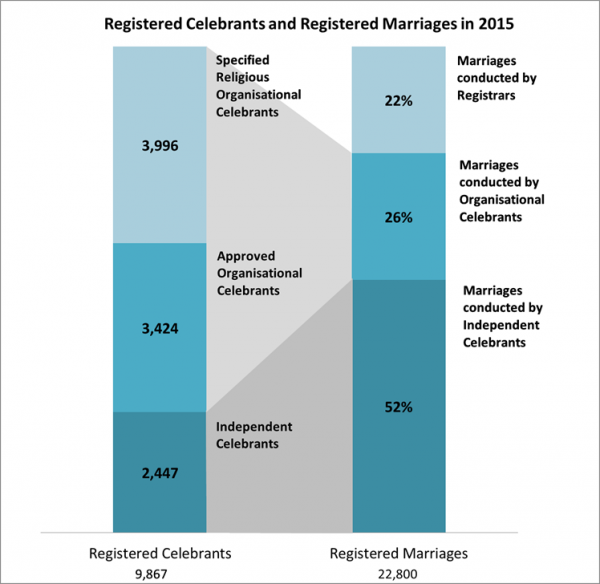

Current fees: changing celebrant market
The cost of managing the initial appointment and annual renewal of marriage and civil union celebrants is partly covered by the fees customers pay when purchasing a licence to marry or enter into a civil union. Legislative provisions exist to charge a fee directly for this service but this has not been done to date.
Following the 2015 renewal of registered celebrants, the Department of Internal Affairs (the Department) now maintains a register of just over 10,000 registered celebrants in New Zealand, in three different categories.
Specified religious bodies (SRBs), Section 8, Marriage Act 1955
There are 10 recognised SRBs listed in Schedule 1 of the Marriage Act 1955. Under the umbrella of these 10 organisations, there are almost 4,000 registered celebrants. The appointment and registration of these celebrants requires minimal effort from Births, Deaths and Marriages (BDM) because the SRBs provide lists of ministers to the Registrar-General who simply adds them to the celebrant list.
Approved organisations, Section 10, Marriage Act 1955
If the Registrar-General is satisfied that the principal object of an organisation is to uphold or promote religious beliefs, philosophical or humanitarian convictions, they may declare the organisation to be an approved organisation, able to nominate celebrants. To be approved as an organisation, the organisation must:
- provide a statement signed by the chief office bearer and 10 members of the organisation;
- provide the objects and beliefs of the organisation; and
- provide the number of members who are over 18 years.
At the end of the 2015 year, there were 730 approved organisations. Under these organisations are 3,424 approved organisational celebrants.
To be approved as an approved organisation celebrant, applicants must:
- be nominated by the approved organisation. The nomination must include the signatures of the chief office bearer and 10 members;
- complete the appropriate form;
- pass evidence of identity checks;
- pass a knowledge of the role test;
- pass a character test; and
- provide two supporting testimonials from people who are not members of the organisation.
Since September 2016, the Celebrants Online service allows organisation members to apply online to become an approved organisation celebrant. The online service also allows organisation administrators to manage their lists of marriage celebrants and submit their annual renewal application using a verified RealMe account.
Independent celebrants
Independent celebrants are appointed under section 10 of the Marriage Act 1955 and under section 26 of the Civil Union Act 2004. In December 2015, there were 2,447 registered independent celebrants. Of these, 26 per cent belong to the Celebrants Association of New Zealand (CANZ), a dedicated, professional group.
Since October 2015, the Celebrants Online service allows members of the public to apply online to become an independent celebrant. The online service also allows existing independent celebrants to submit their annual renewal application and update their own details using a verified RealMe account.
To be appointed as an independent celebrant, an applicant must:
- complete the appropriate form;
- pass evidence of identity checks;
- pass a knowledge of the role test;
- pass a character test;
- provide the details of two referees; and
- provide four supporting referees.
Table 4: Requirements for celebrant appointment
|
Type of celebrant |
Specified religious bodies |
Approved organisation |
Independent |
|---|---|---|---|
|
Nomination required |
No |
Yes |
No |
|
Application form to complete |
No |
Yes |
Yes |
|
Evidence of identity |
No |
Yes |
Yes |
|
Knowledge test |
No |
Yes |
Yes |
|
Character test |
No |
Yes |
Yes |
|
Supporting testimonials |
No |
No |
Yes
|
Annual renewal of celebrants
Each year, the list of registered marriage and civil union celebrants is reconfirmed (renewed), ensuring it remains up to date and accurate.
Celebrants of SRBs and approved organisations remain on the list following confirmation from the organisation. Independent celebrants must:
- satisfy the Registrar-General that they are an active celebrant;
- pass evidence of identity checks;
- pass a knowledge of the role check; and
- pass a good character check.
How many celebrants carry out marriage ceremonies?
Independent celebrants conduct just over half of marriage ceremonies in New Zealand. Registry offices around the country undertake 22 per cent. The remaining 26 per cent are conducted by celebrants from approved organisations and SRBs.
There are 7,500 celebrants who conduct one ceremony or less per year. The cost of registering these celebrants is currently subsidised by couples applying for a marriage or civil union licence.
There is anecdotal evidence that some individuals become celebrants (at no cost) to carry out one-off weddings for friends and family, rather than the latter paying the fee of an existing celebrant.
Figure 1: Breakdown of celebrants against marriages performed 2015

A text version of Figure 1 is also available.Anecdotal evidence also suggests the majority of independent celebrants and many organisations charge a fee for their services.
Introducing a fee for the registration and annual renewal of celebrants would contribute to the costs of maintaining an accurate register, whilst ensuring that only those who are actively performing celebrant duties renew their registration each year.
It will also align with Treasury pricing guidelines, which state that the cost of providing a service should be paid by the party obtaining the service or product – in this case, the ability to conduct marriage and civil union ceremonies.
Last Updated
Page last updated: